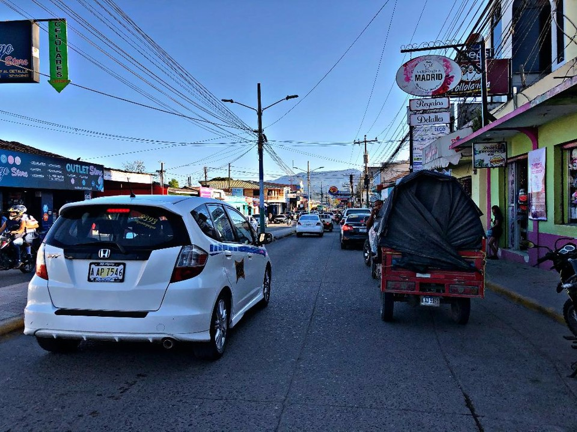
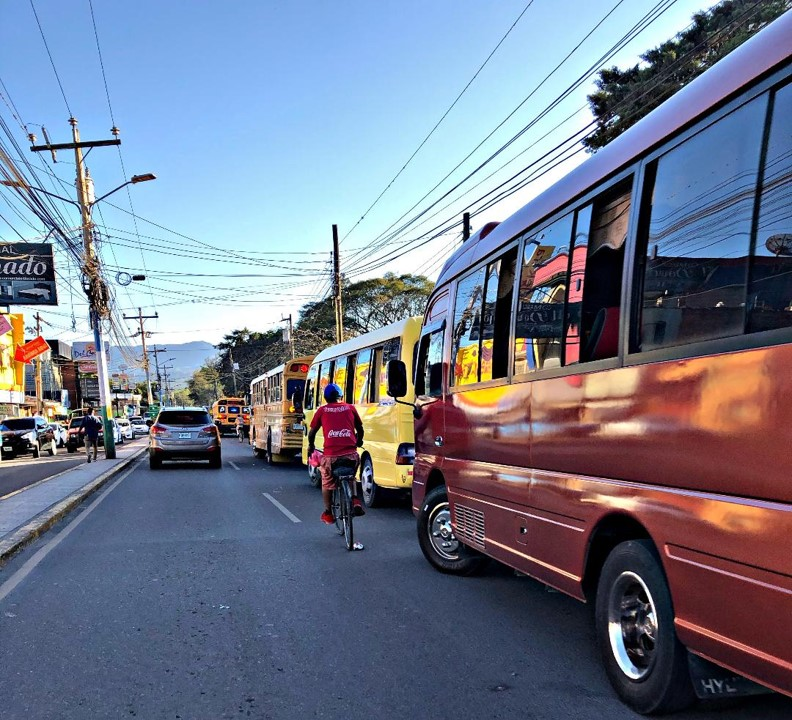
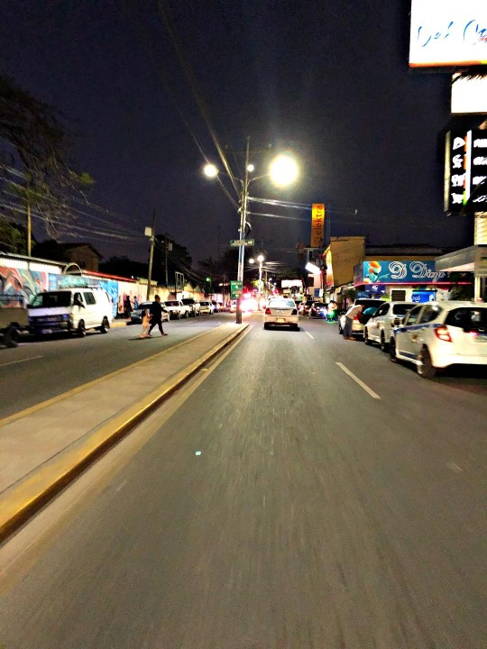

CONTAMINACION VEHICULAR EN SIGUATEPEQUE

Es un fenómeno que actualmente atormenta nuestra ciudad perjudicando a las personas de diferentes maneras, actualmente llamamos contaminación vehicular al tipo de contaminación producida por cualquier vehículo de transporte, siendo los responsables de dicha contaminación los motores de combustión de los vehículos produciendo algunos diversos factores que afectan día a día a nuestra ciudad.
Hablemos de que Siguatepeque en estos últimos años ha elevado la cantidad de vehículos existentes en el Instituto de la propiedad (IP) siendo Siguatepeque y obviamente Comayagua las ciudades que tienen el transito más pesado.
Al haber muchos vehículos circulando en nuestra ciudad el aire es contaminado por diversos causantes de los mismos que son producidos por las emisiones vehiculares, los causantes son; óxidos nitrosos, dióxido de carbono, compuestos de plomo, pequeñas cantidades de dióxido de azufre y amianto. Hablar de esto nos lleva a mencionar la contaminación que producen las personas que manipulan estos vehículos como la basura que dejan las personas en las calles principales o las calles más congestionadas, también podemos mencionar que el ruido que producen el motor de los vehículos se toma en cuenta como contaminación por ruido y a su vez el congestionamiento de trafico que produce el exceso de vehículos que hay en Siguatepeque siendo imposible transitar a ciertas horas pico, provocando gasto de combustible en las personas que utilizan sus medios de transporte y la generación de humo que producen los vehículos que estos afectan el aire y el agua si es que hay algún rio cercano.
Si hablamos de otros tipos de daños que pueden causar dicha contaminación vehicular que es producida en este caso por el congestionamiento de vehículos, debemos hablar de hechos que actúan en contra de la vida de los ciudadanos tales como accidentes de diversos grados habiendo en los últimos años un promedio de 3 accidentes como mínimo por día en Siguatepeque esto producidos por las incertidumbres de los motoristas. Parte de la contaminación vehicular es la basura que dejan los transportistas ya que la insensatez de las personas en insistir cada vez mas en tirar la basura esto perjudica no solo el medio ambiente en el ámbito de que el aire, suelo y hasta el agua se ven afectados por ello. Cabe destacar que en el 2016 se tomo un estimado de 10 años para reducir la contaminación en Siguatepeque y hablo en términos generales ya que con la descentralización de la unidad municipal ambiental (UMA), el empoderamiento de la fiscalía del ambiente y la reactivación del proyecto entorno ecológico se pretendía convertir a Siguatepeque en un municipio verde.
Obviamente evitamos llegar a ese objetivo mediante las incertidumbres y los diversos factores que están afectando la ciudad y la contaminación producida por los vehículos que día a día perjudican el medio ambiente. Sabemos que toda basura que desechamos en vías públicas es contaminación y que producen enfermedades virales siendo este uno de los causantes de que la tasa de enfardados aumente en gran cantidad en nuestra ciudad. Podríamos mencionar algunas soluciones para evitar dicha contaminación como exigir en un alto nivel a los ciudadanos que utilizan un medio de transporte para evitar que las calles y bulevares sirvan de depósito de basura.
 Hablar de en un futuro cercano de la construcción de un punto de buses para evitar saturación tanto de vehículos en los diversos sectores de la ciudad en donde se encuentran congestionados por el exceso de vehículos aparcados en dichos sectores, para
así evitar que las personas que aguardan para tomar un medio de transporte pongan en riesgo su integridad y a su vez que eviten tirar basura en las calles principales de la ciudad, o podemos señalizar dichos sectores para evitar los factores
mencionados anteriormente. Hablar de soluciones también sería una construcción de calles alternas para evitar el congestionamiento vehicular y con el mismo estar cuidando el medio ambiente.
Hablar de en un futuro cercano de la construcción de un punto de buses para evitar saturación tanto de vehículos en los diversos sectores de la ciudad en donde se encuentran congestionados por el exceso de vehículos aparcados en dichos sectores, para
así evitar que las personas que aguardan para tomar un medio de transporte pongan en riesgo su integridad y a su vez que eviten tirar basura en las calles principales de la ciudad, o podemos señalizar dichos sectores para evitar los factores
mencionados anteriormente. Hablar de soluciones también sería una construcción de calles alternas para evitar el congestionamiento vehicular y con el mismo estar cuidando el medio ambiente.